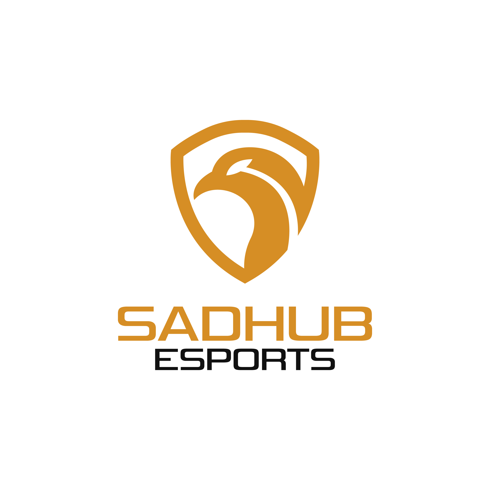

Línea de tiempo
- Mayo – Agosto 2019 Chi Army — Analista de datos Primera experiencia formal como analista en primera división, junto a Daku. El equipo descendió y tomé la decisión de salir con el proceso.
- Agosto – Noviembre 2019 Exilium Gaming — Analista El equipo que había descendido a Chi Army me buscó para reforzar el proceso de ascenso. Las sesiones de análisis con el coach contribuyeron directamente a que el equipo lograra volver a primera división.
- Diciembre 2019 – Agosto 2020 Hunters Esports — Analista Equipo de la creadora de contenido LauGamer. Ocho meses de trabajo continuo junto al Head Coach Caballero, el período de mayor crecimiento en analítica de datos de todo el recorrido.
- Octubre 2020 – Abril 2021 Wygers Colombia — Analyst Los mejores meses de trabajo en ligas. Aprendizaje junto a jugadores de alto nivel como Zeypher, y una mejora notable en la calidad y profundidad de las analíticas producidas.
- 2021 – 2024 Retiro formal de ligas competitivas Período fuera de la escena competitiva organizada. Sin participación en ligas de LoL.
- Junio 2024 – Presente SadHub Esports — Co-fundador Fundación de SadHub Esports, organización colombiana activa en League of Legends y Valorant, junto a Jose, Saggek, Core y Solera.
- 2025 – Presente Selección Colombiana de LoL — Staff Parte del staff técnico de la selección nacional que busca clasificar a la Esports Nations Cup 2026 en Riad, Arabia Saudita.
Chi Army

Chi Army
Analista de datos — Mayo–Agosto 2019
Primera experiencia formal como analista en primera división de la escena colombiana, junto a Daku y el roster del equipo.
Chi Army fue el punto de partida. Mi primera experiencia formal como analista de datos en un equipo de primera división, junto a Daku. Era un contexto completamente nuevo: pasar de analizar partidas de forma independiente a trabajar con jugadores que dependían de esa información para competir en liga.
El equipo descendió al final del split. Tomé la decisión de no continuar y salir con el proceso, una de las primeras lecciones reales sobre cómo los ciclos en el esport se cierran rápido y sin aviso.
Exilium Gaming

Exilium Gaming
Analista — Agosto–Noviembre 2019
El equipo que había descendido a Chi Army me buscó para reforzar el proceso de ascenso. Las sesiones de análisis con el coach contribuyeron directamente a que el equipo regresara a primera división.
Después de la salida de Chi Army, Exilium Gaming me contactó. Eran el equipo al que Chi Army había descendido y estaban construyendo su proceso de ascenso de vuelta a primera división.
Lo que siguió fueron múltiples sesiones de trabajo con el coach de ese entonces: identificar los patrones que el equipo necesitaba corregir, construir una metodología de preparación de rivales adaptada a sus recursos y traducir eso en decisiones concretas de draft y estrategia de mapa. El equipo ascendió. Esa es una de las experiencias que más define mi forma de entender el rol del analista: no como un observador externo, sino como parte activa del resultado.
Hunters Esports

Hunters Esports
Analista — Diciembre 2019–Agosto 2020
Equipo vinculado a la creadora de contenido LauGamer. Ocho meses de trabajo continuo junto al Head Coach Caballero, el período de mayor crecimiento analítico de todo el recorrido.
Hunters Esports llegó como oferta directa después de lo hecho en Exilium. Era el equipo vinculado a la creadora de contenido LauGamer, con una identidad pública reconocida dentro de la escena colombiana.
Estuve desde diciembre de 2019 hasta agosto de 2020: ocho meses seguidos, el período más largo en un solo equipo hasta ese momento. La relación de trabajo con Caballero, Head Coach de ese entonces, fue determinante. Tener un coach con criterio técnico sólido y disposición real para incorporar el análisis de datos al proceso de preparación —no como complemento decorativo, sino como parte central de las decisiones— elevó el nivel de todo el trabajo analítico.
Hunters Esports se convirtió posteriormente en Exilium Hunters, continuando en la escena colombiana con una trayectoria propia.
Wygers Colombia

Wygers Colombia
Analyst — Octubre 2020–Abril 2021
Rama colombiana de la organización española Wygers. Golden League Apertura 2021, jugadores de alto nivel como Zeypher, y el período de mayor aprendizaje del recorrido en ligas.
Wygers Colombia fue la última parada en las ligas competitivas, y la más significativa. Me incorporé en octubre de 2020, compitiendo en la Golden League Apertura 2021 junto al head coach Pastel y un roster con jugadores que admiraba de la escena local, en particular Zeypher.
Trabajar con jugadores de ese nivel obliga a un estándar diferente. Las analíticas tienen que ser más precisas, la comunicación más directa, y la capacidad de anticipar preguntas que el jugador todavía no ha hecho es lo que separa un buen informe de uno que realmente cambia cómo se entrena. Esos meses fueron los de mayor aprendizaje del recorrido completo en ligas.
La salida en abril de 2021 cerró conscientemente el capítulo de participación activa en ligas competitivas de League of Legends.
SadHub Esports

SadHubEsports
SadHub Esports
Co-fundador — Junio 2024–Presente
Organización colombiana de esports activa en League of Legends y Valorant. Fundada junto a Jose, Saggek, Core y Solera. La web en sadhub.online fue desarrollada junto a mi novia.